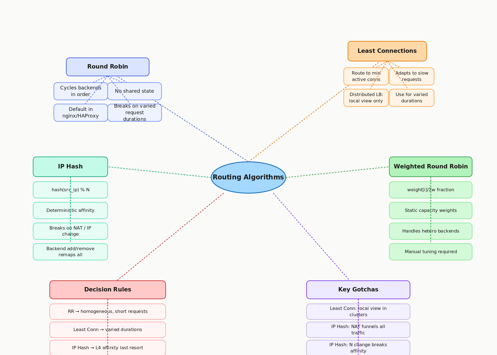

4.2 Routing Algorithms
Round Robin · Least Connections · IP Hash · Weighted
01 Goal of This Subtopic
- Be able to name all four major routing algorithms from memory, explain what each measures, and describe the failure mode or edge case of each.
- Select the right algorithm for a given scenario (homogeneous vs. heterogeneous backends, varied vs. uniform request durations, sticky session requirement) and justify the choice out loud.
- Explain why least connections breaks down in a distributed multi-LB deployment — and why this is the single most common "gotcha" for this subtopic.
- Explain the two failure conditions of IP hash (NAT and IP change) and articulate why it is a last resort, not a first choice, for session affinity.
02 What Mastery Looks Like
- Can explain all four algorithms and their failure modes from memory in under 90 seconds, without notes.
- Can select the right algorithm for a given scenario (varied durations, heterogeneous capacity, affinity requirement) and justify the choice with a concrete trade-off.
- Can explain why least connections is inaccurate in a multi-LB cluster and what alternatives exist.
- Can explain the two IP hash failure conditions and why adding a backend breaks affinity for all existing clients.
- Can describe power-of-two choices as a better approximation than least connections at distributed scale.
03 Study Phases to Achieve Mastery
Goal: Read deeply enough that you could explain the concept without the doc.
- Read nginx Upstream Module Documentation — nginx.org/en/docs/http/ngx_http_upstream_module.html (round_robin, least_conn, ip_hash, hash directives)
- Read HAProxy Load Balancing Algorithms — docs.haproxy.org (Configuration Manual §4.2,
balancekeyword) - Read AWS ALB: Routing Algorithm Selection — docs.aws.amazon.com/elasticloadbalancing/latest/application/load-balancer-target-groups.html#modify-routing-algorithm
- Read ByteByteGo — System Design Interview Vol. 1, load balancing chapter (routing algorithm discussion)
- Read Envoy Proxy Load Balancing Policies — envoyproxy.io/docs (load_balancers section) — covers power-of-two choices
- Read Sections 5–9 (Core Definition to How It Works) carefully — don't skim
- Re-read the Cheatsheet (Section 4) and try to recite it from memory after
Goal: Reproduce the knowledge in your own words without looking.
- Close the doc — write out the four algorithms and their failure modes from memory, then compare
- Explain First Principles out loud — what was the routing problem before these algorithms were formalized?
- Reconstruct the decision logic for each algorithm step by step from memory
- Restate each Trade-off row in your own words — if you can't explain the cost, you don't own it yet
Goal: Connect to real systems and simulate interview scenarios.
- Verify each Real-World Example independently and add anything missed to My Notes
- Practice Interview Application out loud — trigger phrases + trade-off statement verbatim
- Work through Common Misconceptions — explain WHY each is wrong, not just that it is
- Trace Relationships to Other Concepts without looking
Goal: Confirm you actually own it, not just recognize it.
- Answer every Self-Check Quiz question out loud without notes
- Recite the Cheatsheet from memory — if you can't, re-do Phase 2
- Tick off Mastery items — only if you can demonstrate on demand, not just if it sounds familiar
- Teach this concept for 2 minutes to an imaginary interviewer without hesitation or notes
04 Cheatsheet

05 Core Definition
06 Core Concepts
backend = hash(src_ip) % N. Same client IP always maps to the same backend — deterministic affinity without per-session LB state. Failure mode 1: corporate NAT routes thousands of users from one IP → one backend. Failure mode 2: mobile IP changes → silent session break. Adding/removing backends changes N and remaps most IPs.07 First Principles — Why Does This Exist?
Once you have N backends behind a load balancer, you need a decision function for every request. Without one, all traffic goes to the same backend — defeating the purpose of having multiple. The naive solution — send to backend 0 always — isn't load balancing, it's just routing.
The first routing algorithms were round robin: simple, stateless, and fair under the assumption that all requests are equal. That assumption breaks quickly in practice. A backend handling one slow database query (10 seconds) looks identical to the round robin counter as one handling fast cache reads. The slow backend accumulates in-flight requests while the algorithm continues routing new arrivals to it at the same rate.
Least connections emerged as the answer: use connection count as a proxy for current backend load and steer new arrivals toward the less-loaded backends. It works perfectly on a single LB node. It breaks in distributed LB deployments where no node has a global view — and modern production deployments always have multiple LB nodes for availability. This spawned the "power of two choices" heuristic: sample two backends randomly, compare, pick the better one. Near-optimal distribution without global coordination.
IP hash exists for a different reason: legacy stateful applications need the same client to consistently reach the same backend. It trades distribution quality for deterministic placement — a mitigation for stateful backends, not a feature of good system design.
08 Mental Models
Model 1: Cashier Lanes at a Supermarket
Round robin assigns customers to lanes in strict rotation regardless of queue length. Least connections directs each customer to the shortest queue. IP hash says "last names A–M always go to lane 1." Weighted RR gives the fastest cashier 3 customers for every 1 sent to the trainee. Where it breaks down: in a supermarket you can see all lanes. A distributed LB running least connections is like each cashier only knowing their own queue — they can't see the others, so "shortest queue" is an illusion.
Model 2: The Coordination Tax Spectrum
Place algorithms on a spectrum from zero coordination to maximum coordination. Round robin and IP hash sit at zero — no runtime state needed beyond a counter or hash. Weighted RR is semi-static — one-time configuration, zero runtime cost. Least connections requires live counter reads — low cost on one node, coordination overhead in a cluster. Power of two choices is the sweet spot: two counter reads, no lock, near-optimal accuracy. Use this model to answer: "Can we afford the coordination this algorithm requires at our LB cluster size?"
Model 3: Static vs. Adaptive Algorithms
Round robin, weighted RR, and IP hash are static — they don't respond to observed backend state. Least connections is adaptive — it reacts to live measurements. Adaptive is not always superior: it introduces sensitivity to measurement noise and can cause oscillation (a burst of connections makes a backend look busy → traffic shifts away → backend empties → traffic surges back). Static algorithms are predictable; adaptive algorithms can perform better on average but with higher variance. In practice: health-check-driven backend removal is the coarse adaptive layer; the routing algorithm handles fine-grained distribution within the healthy pool.
09 How It Works — Mechanics
Round Robin
- 1Maintain an atomic counter initialized to 0 (per LB node).
- 2On each request:
index = (counter++) % Nwhere N = number of healthy backends. - 3Forward request to
backends[index]. No per-request state stored. - 4When a backend is removed (health check failure), N decreases. Modulo naturally skips it.
Least Connections
- 1Maintain an in-memory connection counter per backend:
conn_count[i]. - 2On new connection:
select = argmin(conn_count[i]). Incrementconn_count[selected]. - 3On connection close: decrement
conn_count[backend].
IP Hash
- 1Extract client source IP from the incoming request.
- 2Compute
hash(src_ip)— typically CRC32 or MurmurHash. - 3Map to backend:
index = hash(src_ip) % N.
hash(ip) % 6 remaps approximately 5/6 of all client IPs to different backends. All sessions using remapped IPs lose affinity instantly. This is why IP hash is not a true sticky session mechanism — use consistent hashing (topic 7.4) if you need affinity that survives scaling.Weighted Round Robin (Smooth Variant)
- 1Assign weights:
[A=3, B=1, C=1]. Total weight = 5. - 2Nginx's smooth weighted RR: on each request, add each backend's weight to its "current weight." Select the backend with the highest current weight. Subtract total weight from that backend's current weight.
- 3Result: A gets 3 out of every 5 requests, B and C get 1 each — distributed smoothly, not in bursts.
Algorithm Quick-Compare
10 Real-World System Examples
| System | How This Concept Applies | Notes |
|---|---|---|
| nginx | Default: round robin. Opt-in: least_conn, ip_hash, hash $var consistent |
least_conn is the most common production upgrade; hash ... consistent uses consistent hashing for cache-affinity (not modular hash) |
| HAProxy | balance roundrobin (default), leastconn, source (IP hash), random |
leastconn recommended for long-lived connections (WebSockets, DB proxies); source for L4 stateful affinity |
| AWS ALB | Round robin (default) or Least Outstanding Requests — configurable per target group | "Least Outstanding Requests" counts in-flight HTTP requests, not TCP connections — more accurate for HTTP/2 multiplexing |
| Envoy Proxy | Round robin, least request (power of two choices), random, ring hash (consistent), Maglev hash | LEAST_REQUEST uses power of two choices internally — not global least; RING_HASH used for cache-affinity routing in service meshes |
| Kubernetes (IPVS mode) | Round robin, least conn, destination hash, source hash — configurable via kube-proxy --ipvs-scheduler |
Default iptables mode uses random connection tracking; IPVS mode unlocks proper algorithm selection in production clusters |
| GCP Cloud Load Balancing | Round robin with session affinity overlay (generated cookie, client IP, header-based) | GCP treats affinity as a modifier on top of round robin, not a separate algorithm — cleaner model than IP hash |
11 Trade-offs
| Benefit | Cost / Limitation |
|---|---|
| Round robin requires no shared state — scales linearly across LB nodes with zero coordination | Blind to request duration variance — slow backends continue receiving requests at the same rate, creating queue buildup |
| Least connections adapts to unequal request durations, naturally reducing load on busy backends | In a distributed LB cluster, each node only sees its own connections — the "minimum" is a local minimum, not global |
| IP hash provides deterministic client-to-backend affinity with zero per-session LB state | Breaks on NAT (many users → one IP → one backend hot spot) and on IP changes; adding a backend remaps all clients |
| Weighted round robin handles heterogeneous backend capacity with no runtime measurement | Static weights require manual tuning; stale weights after scaling events cause uneven distribution until corrected |
| Power of two choices approaches least-conn accuracy with only two counter reads — no global lock needed | Slightly more complex to implement; depends on connection count accuracy at sampled backends |
12 Interview Application
Trigger Phrases
- "How does your load balancer decide which backend to route to?"
- "Some requests take much longer than others — how do you handle that at the LB level?"
- "We need users to always reach the same backend."
- "Our backends have different hardware specs — how do you account for that?"
What You Say
Trade-off Statement (memorize this)
13 Common Misconceptions & Gotchas
hash(ip) % N. Changing N from 5 to 6 remaps approximately 5 out of every 6 IPs to a different backend. Almost every client loses affinity. This is why IP hash is distinct from consistent hashing (topic 7.4) — consistent hashing is specifically designed so that adding a node only remaps 1/N of keys, not nearly all of them.14 Relationships to Other Concepts
| Relationship | Concept | Why |
|---|---|---|
| Builds on | 4.1 L4 vs. L7 Load Balancers | Algorithm choice depends on what the LB can see. IP hash is an L4 concept — L7 prefers cookie-based affinity. Least connections at L7 can count HTTP requests (more accurate); at L4 it counts TCP connections (coarser). |
| Enables | 4.3 Health Checks and Failure Detection | Health checks interact with routing algorithms by removing unhealthy backends from the pool. When N changes, round robin adapts naturally; IP hash remaps nearly all clients — a critical operational implication. |
| Enables | 4.6 Sticky Sessions | IP hash is the L4 form of sticky sessions. Understanding its failure modes directly motivates the L7 cookie-based affinity covered in 4.6. |
| Tension with | 3.1 Stateless Architecture | IP hash and sticky sessions exist to compensate for stateful backends. If every backend can serve every user (stateless design), affinity is irrelevant and any algorithm works. Stateless design eliminates the routing algorithm complexity entirely. |
| Previews | 7.4 Consistent Hashing | Consistent hashing is the production-grade answer to IP hash's N-change problem — it remaps only 1/N keys when a node is added, not nearly all of them. Understanding why IP hash breaks motivates why consistent hashing was invented. |
15 Self-Check Quiz
hash(single_ip) % 5. What value do you get for all 1,000 users? Revisit Section 6, IP Hash failure mode 1.hash(ip) % 5 map to a different backend when N becomes 6? Then contrast with consistent hashing's 1/N remapping guarantee. Revisit Section 13, misconception 4.16 Further Reading
least_conn, ip_hash, hash ... consistent, and weight configurationbalance keyword — the most comprehensive single-page comparison of LB algorithm behaviors